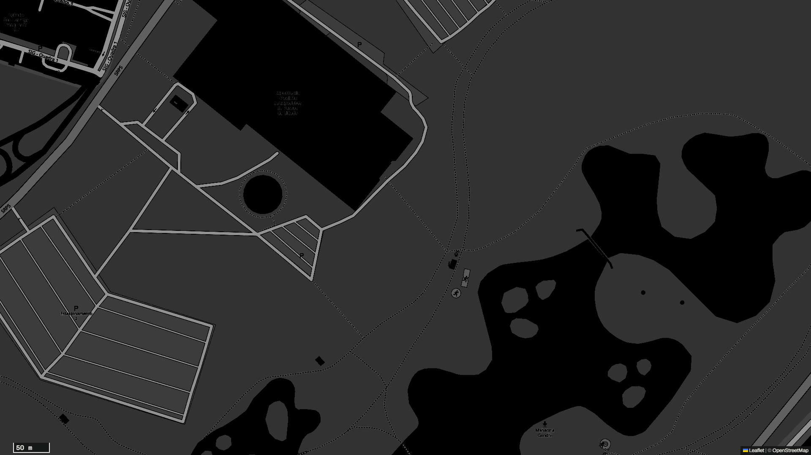
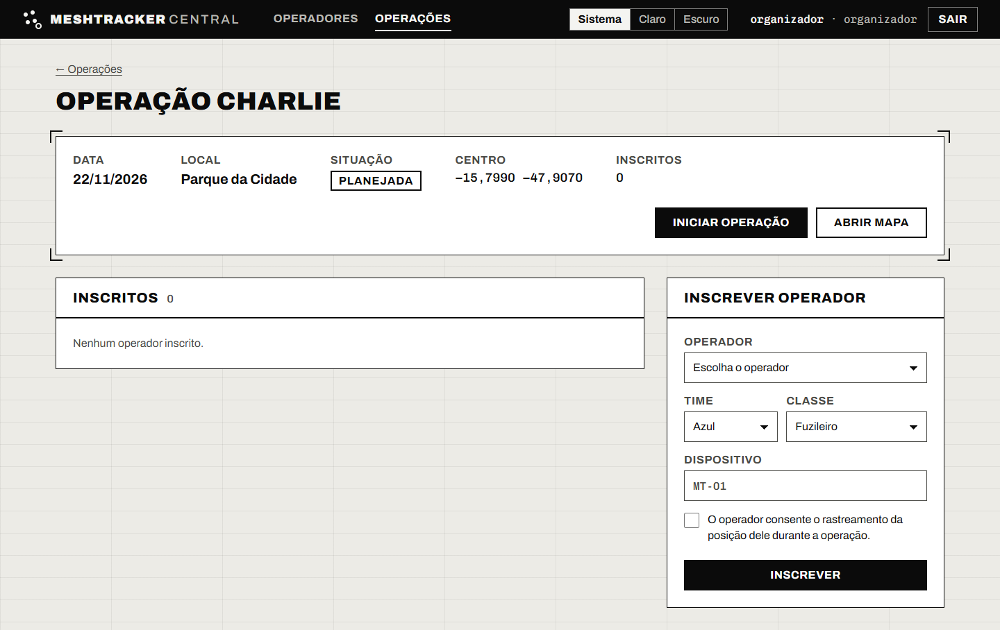
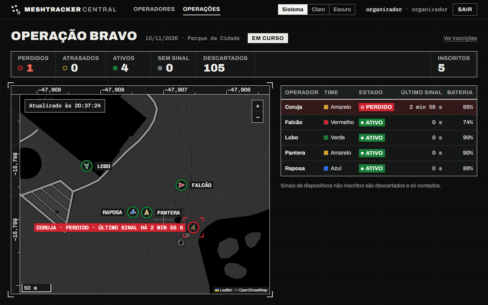
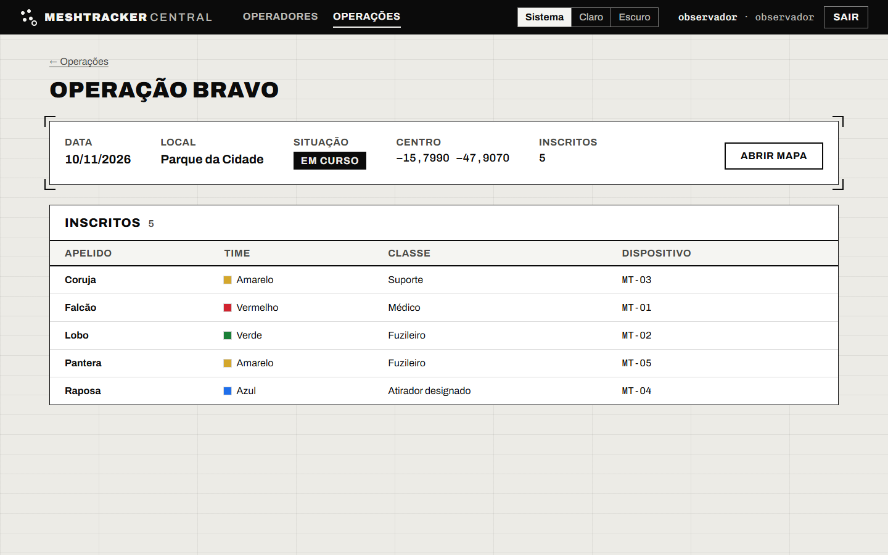

Demo Day · 15/12/2026
MeshTracker
Central
Painel do organizador de operações de airsoft do DF
Problema 1
O operador teria de se cadastrar de novo a cada operação.
Problema 2
Cada dispositivo esquece quem some por 2 minutos, e ninguém vê o conjunto.
Aviso Sinais simulados. Problema ainda não confirmado com a federação.
© OpenStreetMap contributors
A central que faltava
operational-commandGere as operações.
MeshTracker CentralInscreve e mostra no mapa.
Dispositivo MeshTrackerGPS e rádio LoRa de 433 MHz.
Nesta demoSem integração com o operational-command, sem dispositivo: sinais simulados.
Por que agoraOs dois projetos já existem; o MVP cabe em três incrementos, até 08/12.
ADR-001 · O modelo de dados
Perfil permanente,
inscrição por operação
ContextoO operador joga várias operações, e time, classe e dispositivo mudam. A posição é dado pessoal, e o consentimento vale por operação.
DecisãoO perfil é permanente e a inscrição guarda o que muda.
DescarteiCadastrar o operador dentro de cada operação: obriga o recadastro.
Na demo e nos testesInscrever os 5 sem recadastro (H1). Regras R1 a R5; R2 e R3 são UNIQUE no banco.
ADR-003 · O contrato do sinal
HTTP no lugar de MQTT
ContextoSem hardware nem gateway real no MVP, mas o simulador, o descarte e o mapa precisam de um contrato.
DecisãoPOST /api/v1/sinais com JSON. Os códigos: 401 sem token, 202 descartado, 200 duplicado, 201 gravado.
DescarteiMQTT com Mosquitto: broker, TLS e permissões por tópico. Ele volta com o gateway real.
Na demo e nos testesO terminal da demo (H4). Regras R7, R8 e R11.
Demo ao vivo · passo 1 de 2
Demo ao vivo · passo 2 de 2
H1Inscrever sem
recadastrar
Meta da H1
3min
Os 5 já cadastrados entram na Operação Charlie em até 3 min.
O que olhar
O formulário não pede nome.
E as três recusas.
5 inscritos, nenhum cadastro refeito.
Três recusas
R2operador repetidoUNIQUE no banco
R3dispositivo repetidoUNIQUE no banco
R5sem consentimento
Por script, nas telas da Aula 14: 554 ms. Mede o fluxo, não uma pessoa.

Print da Charlie em preparação
ADR-001: o perfil é permanente.
© OpenStreetMap contributors
Demo ao vivo · passo 1 de 2
Demo ao vivo · passo 2 de 2
H2Quem está perdido,
e há quanto tempo
Meta da H2
10s
Apontar quem está perdido, e há quanto tempo, depois de abrir o mapa.
O que olhar
A faixa de contagem acima do mapa.
A Coruja (MT-03), com colchetes.
MT-99Só no contador de descartados.
R9 · estado pelo tempo desde o último sinal
59·60·61 s119·120·121 s
Sem sinal
Ativo
Atrasado
Perdido
nunca recebeuaté 60 s60 a 120 sacima de 120 s
R939
testes nos limites do tempo, contados em 09/11/2026
202R7: o MT-99, não inscrito, só conta como descartado.
200R8: pacote repetido não grava de novo.

Print do mapa em preparação
Por script, nas telas da Aula 14: mediana de 94 ms. Mede o fluxo, não uma pessoa.
© OpenStreetMap contributors
Demo ao vivo · passo 1 de 2
Demo ao vivo · passo 2 de 2
H3 e H4Acesso e API
No navegador
H3
Nenhum sinal de não inscrito vira posição; nenhuma escrita do observador passa.
O que olhar
O observador: só lista e mapa, sem formulários.
No terminal
H4
O simulador e um curl usam só a API, sem tocar no banco.
O que olhar
Os códigos da API, sem token e com token.
403Observador (R10). Só lê: toda escrita dele recebe 403.
401API (R11). Sem token.
201Com token: pacote gravado.
200O mesmo pacote de novo: duplicado (R8).

Print do observador em preparação
O contrato que o simulador usa e que um gateway real usaria (ADR-003).
© OpenStreetMap contributors
Testes por regra
Testes na suíte
505
contados pelo pytest em 09/11/2026
66 de segurança
31 visuais, da fase 2
As barras contam pelo nome do teste, no mínimo.
R1sem novo cadastro16
R2uma inscrição por operação5
R3dispositivo em uma inscrição6
R4muda só a inscrição7
R5exige consentimento4
R6operação só avança17
R7não inscrito é descartado13
R8pacote repetido11
R9estado por tempo39
R10observador só lê16
R11token da API14
S-1 a S-5 · cinco achados, todos de severidade baixa
Revisão de segurança
S-1Corpo da requisição sem limiteCorrigido limite de 64 KB, resposta 413
S-2JSON aninhado dava erro 500Corrigido agora responde 400
S-3O tempo do login revelava quem existeCorrigido
S-4O simulador seguia redirecionamento, levando o tokenCorrigido
S-5Token passado em --tokenAceito o Guia recomenda a variável de ambiente
bandit: sem achado alto. pip-audit: sem vulnerabilidade conhecida. Revisão de 08/11/2026.
Reprodução pelo Guia
1Clone limpo
2Venv novo
3Só o Guia
Feita em 08/11
Num clone limpo, com as telas da Aula 14: 382 testes passaram.
A refazer
Com as telas novas, antes da v1.0 (até 05/12).
O que mudou desde a Aula 14
Aula 14 (10/11)
Agora

Print da Aula 14 em preparação
Print do mapa em preparação
1 Moldura preta
2 Faixa com a contagem por estado
3 Perdido com colchetes e “perdido · último sinal há”
Os botões têm os mesmos nomes.